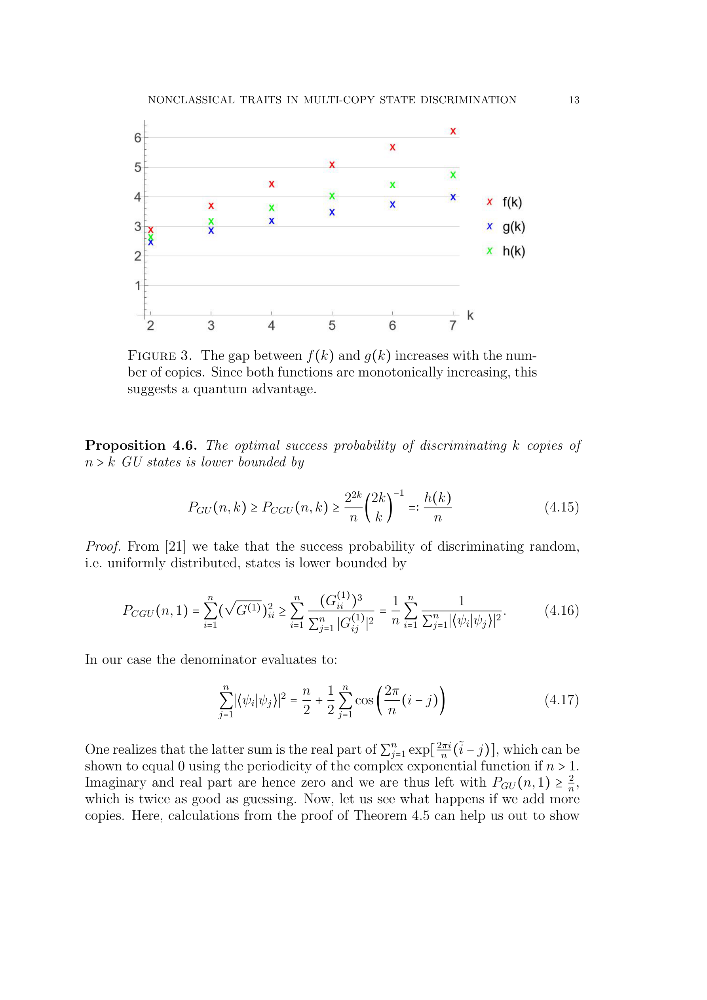
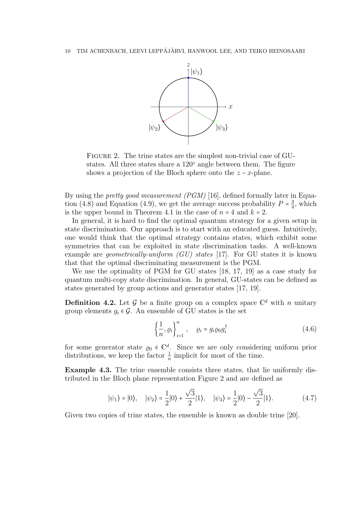

Essence

Figure 1. Alice is randomly asked to prepare a state with label
다중 복사본 양자 상태 판별에서 전역 측정과 국소 측정 전략을 비교하여, 양자 이론이 고전 이론을 초월하는 조건을 규명하고 얽힘 없는 비국소성(nonlocality without entanglement)을 발견한다.
저자: Timothy Achenbach, Leevi Leppajarvi, Hanwool Lee, Teiko Heinosaari | 날짜: 2026 | URL: https://arxiv.org/abs/2604.26647
Figure 1. Alice is randomly asked to prepare a state with label
다중 복사본 양자 상태 판별에서 전역 측정과 국소 측정 전략을 비교하여, 양자 이론이 고전 이론을 초월하는 조건을 규명하고 얽힘 없는 비국소성(nonlocality without entanglement)을 발견한다.

Figure 3. The gap between f(k) and g(k) increases with the num-

Figure 2. The trine states are the simplest non-trivial case of GU-
총평: 이 논문은 다중 복사본 상태 판별에서 양자 이론과 고전 이론의 경계를 명확히 하고, 측정 전략의 최적성을 체계적으로 분석함으로써 양자 정보 이론의 기초와 실제 응용 모두에 중요한 기여를 한다. 특히 일반화된 operational theories 프레임워크를 통해 논의를 일반화한 점이 높이 평가된다.